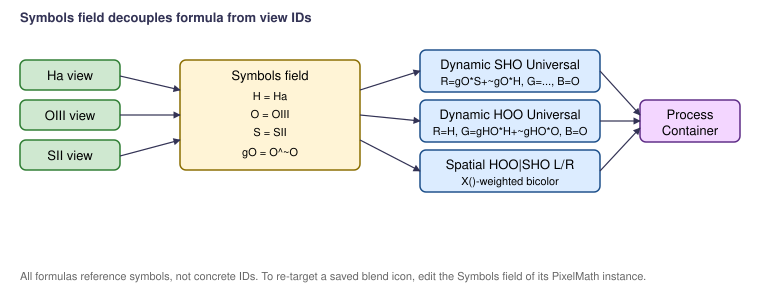

Scripts > EGo > Dynamic + Spatial NB Blends
Generates PixelMath process instances for PIP-gated dynamic narrowband blends (in the spirit of Bill Blanshan and Coldest Nights recipes) and spatial split blends (left/right, top/bottom, radial). Each blend is delivered either as a single bundled ProcessContainer icon or one PixelMath at a time, depending on the delivery mode you pick.

Dynamic blends use per-pixel gates derived from the channel data
itself. The most common form is the PIP (Power-In-Power) function
x^~x — when the input is mid-range the output peaks, and
at the extremes it drops to zero. Multiplying a channel by such a gate
creates a smooth per-pixel mask without the user designing one
manually.
// Example: Dynamic SHO Universal // gO = O^~O OIII PIP // gHO = (H*O)^~(H*O) combined-emission PIP // R = gO*S + ~gO*H // G = gHO*H + ~gHO*O // B = O
Spatial blends use X() and Y() (normalized
pixel coordinates in [0,1]) to weight one palette against another
across the frame. Useful when, for example, an SHO palette works
beautifully on one half of a wide nebula and HOO works better on the
other.
Every blend uses single-letter symbols (H, O, S, plus L, R, G, B for the LRGB-flavored recipes). The dialog lets you set the actual view IDs once at the top of the dialog; the PixelMath Symbols field is then constructed from those bindings, so re-targeting a saved icon to a different image set is a one-field edit later.
| Symbol | Default binding | Used by |
|---|---|---|
| H | Ha | almost every blend |
| O | OIII | almost every blend |
| S | SII | SHO-family blends |
| L, R, G, B | L, R, G, B | LRGB-flavored variants |
Part of the EGo PixInsight script set. PCL License 2.0.